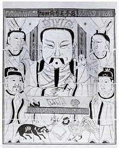

A papírgyártás története
A papír feltalálása
A papírmerítés
A papír feltalálása előtt
A papír diadalútja

A papír feltalálása
Azt, hogy pontosan hol és mikor találták fel a papírt, a múlt ködébe vész, csak néhány nevet ismerünk a kezdeti időkből. Caj-Lun volt az, aki a hagyomány szerint közbenjárt Ho-ti császárnál annak érdekében, hogy a Kínai birodalomban államilag is serkentsék a papírgyártást. Ez időszámításunk szerint 105-ben történt.

A papírmerítés
Régen papírmerítéssel gyártották a papírt a következő módon: egy üstbe növényi anyagokat tettek, és összefőzték némi selyemmel vagy kötéldarabokkal egészen addig, míg híg rostos pépet nem kaptak. Ezután a rostoldatot egy szitára öntötték, a vizet lecsöpögtették, és az így kapott rostokat leválasztották a szitáról.
A papír feltalálása előtt
Mielőtt feltalálták a papírt, az emberek más anyagokra írták szövegeiket: kő- és agyagtáblára, viasztáblára, papiruszra vagy pergamenre. Bár ezekre is lehetett írni, vagy az előállításuk volt hosszadalmasabb, vagy kezelésük volt nehézkesebb, tárolásuk pedig nagyobb helyet vagy gondosságot igényelt.
A pergamen állatok bőréből készített, tartós, hártyaszerű anyag. A papír megjelenése előtt erre írtak Európában.
A papír diadalútja
Európába a mórok közvetítésével jutott el a papír, az első európai papírmalmokat pedig 1100 tájékán alapították, az Ibériai-félszigeten. Olaszországot egy-másfél évszázad késéssel hódította meg a papír, Luccában Genovában és Fabrianóban működtek jelentős papírkészítő műhelyek. Hazánkban csak jóval ezután tudott a papírkészítői szakma meghonosodni: az első magyarországi papírmalmot az 1520-as években alapították, Lőcsén.
A papírmalom a papírkészítő műhely elnevezése. Valószínűleg a rongyzúzó berendezést hajtó vízikerék után kapta a papírkészítő műhely ezt az elnevezést.
Folytatás: Gutenberg és a könyvnyomtatás